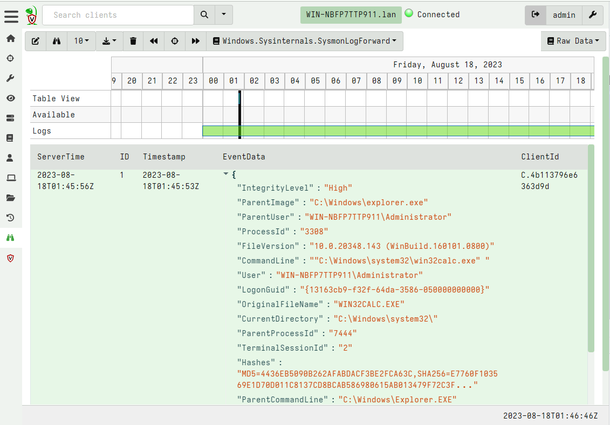

<!-- .slide: class="content" --> ## DFIR Mind map <a href="https://www.sans.org/posters/windows-forensic-analysis/" > The SANS Windows Forensic Analysis Poster </a> <img src="windows_forensic_analysis_poster.png" style="height: 400px;"> --- <!-- .slide: class="content" --> ## Event logs <img src="account_activity.png" style="height: 400px;"> --- <!-- .slide: class="content" --> ## Event logs * Event logs are a huge source of forensic information! * But they have some problems: * Rotation of event logs. By default event log size is very small (20 mb) * We can adjust the maximum size of log files through group policy or the registry. --- <!-- .slide: class="content" --> ## Setting event log size <img src="gpo_event_logs.png"> --- <!-- .slide: class="content" --> ## Clearing the event logs * Many attackers clear the event logs to frustrate forensic analysis. * Use Volume Shadow copies to periodically snapshot the disk * Forward events off the system, e.g. for SIEM or even built in Event Log forwarding. * Detect event log configuration modifications (Registry changes) --- <!-- .slide: class="content" --> ## Forwarding event logs off the system * The best practice for protecting event logs is to forward them off the system. * Built in facility within Windows: [Windows Event Forwarding (WEF)](https://learn.microsoft.com/en-us/windows/security/threat-protection/use-windows-event-forwarding-to-assist-in-intrusion-detection?source=recommendations) * Use agent like Elastic or Velociraptor * Tuning which events to forward * Sending only relevant events means less volume * Indexing events on the server side may increase costs (can just forward for backup). --- <!-- .slide: class="full_screen_diagram" --> ## Example: Forwarding Sysmon logs  --- <!-- .slide: class="content" --> ## Disabling of event logs * Attackers can actively change logging configuration <img src="disable-bits-log.png" style="height: 400px;"> --- <!-- .slide: class="content" --> ## What can we do with an agent? * We can constantly check configuration for compliance  --- <!-- .slide: class="content" --> ## What can we do with an agent? * Real time alerting on configuration modifications